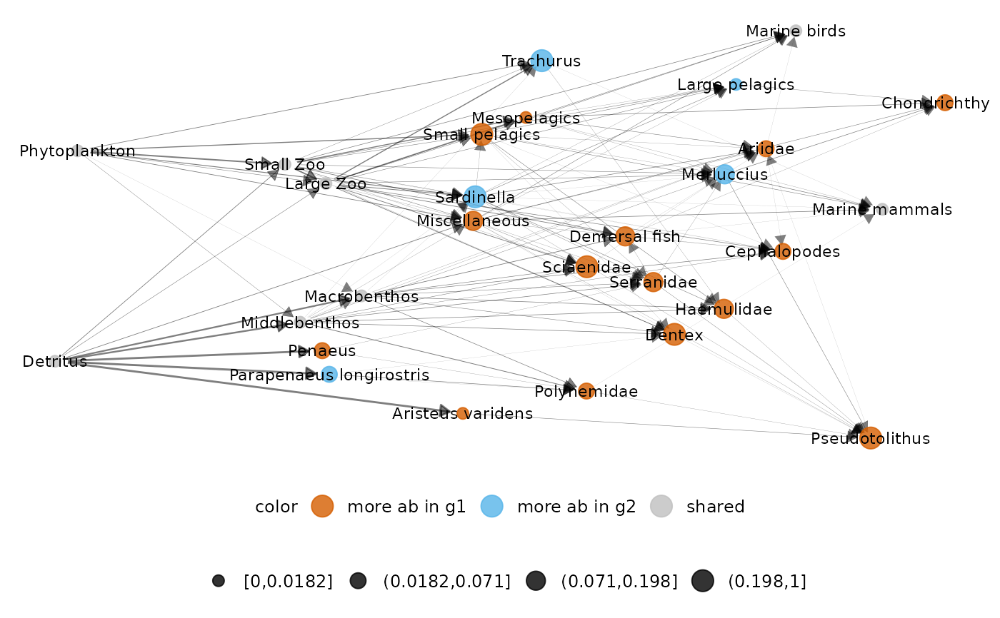
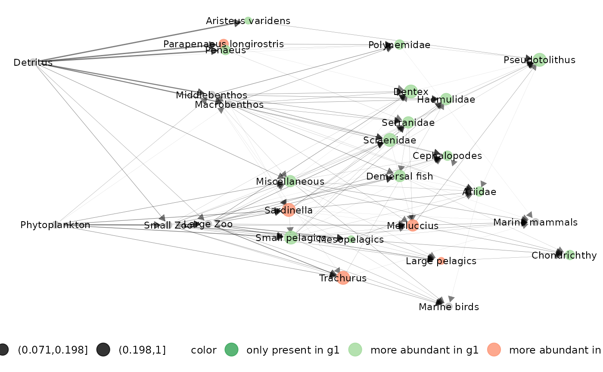
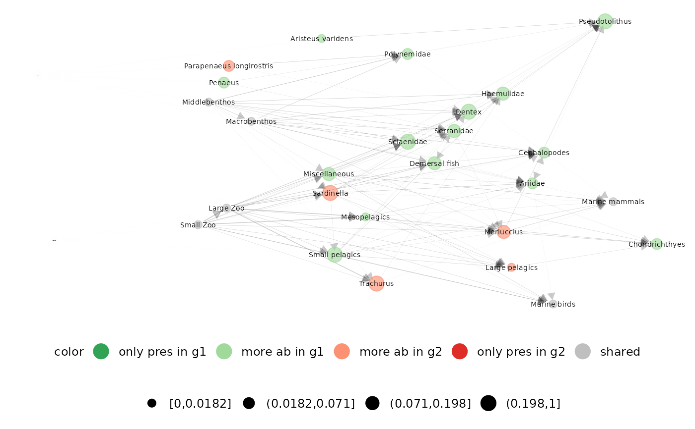
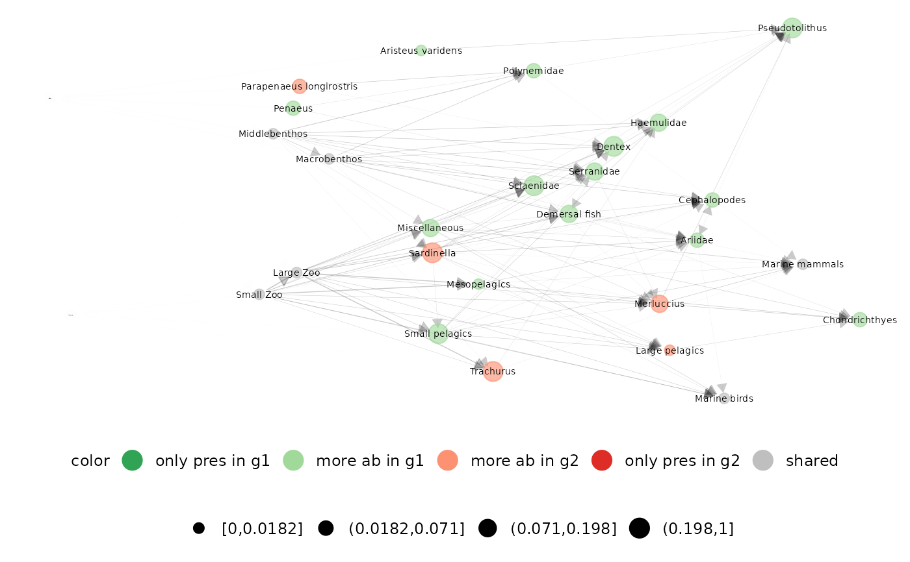

Function to represent difference between two networks belonging to a metanetwork with a layout based on diffusion kernel, using either 'ggnet' or 'visNetwork' visualisation
diff_plot(
metanetwork,
g1,
g2,
beta = 0.1,
mode = "TL-tsne",
vis_tool = "ggnet",
edge_thrs = NULL,
layout_metaweb = F,
flip_coords = F,
alpha_per_group = NULL,
alpha_per_node = NULL,
TL_tsne.config = TL_tsne.default,
nrep_ly = 1,
ggnet.config = ggnet.default,
visNetwork.config = visNetwork.default
)Arguments
- metanetwork
object of class 'metanetwork'
- g1
network (of class 'igraph') of metanetwork
- g2
network (of class 'igraph') of metanetwork
- beta
the diffusion parameter of the diffusion kernel, a positive scalar controlling the squeezing of the network
- mode
mode used for layout, 'TL-tsne' for trophic level t-sne and 'TL-kpco' for trophic level kernel based pco. Default is 'TL-tsne'
- vis_tool
a character indicating the visualisation tool, either 'ggnet' or visNetwork
- edge_thrs
if non-null, a numeric (between 0 and 1) indicating an edge threshold for the representation
- layout_metaweb
a boolean indicating whether the layout of the metaweb should be used to represent the difference network. to use metaweb layout = T, you need first to compute metaweb layout for this beta value using
attach_layout()- flip_coords
a boolean indicating wheter coordinates should be flipped. In that case, y-axis is the trophic level and x-axis is the layout axis
- alpha_per_group
controlling alpha per group (only for 'ggnet' vis), a list of format
list(resolutions = "XX",groups = XX,alpha_focal = XX,alpha_hidden = XX), see example- alpha_per_node
controlling alpha per node (only for 'ggnet' vis), a list of format
list(nodes = XX,alpha_focal = XX,alpha_hidden = XX), see example- TL_tsne.config
configuration list for mode 'TL-tsne', default is TL_tsne.default
- nrep_ly
If several layouts for this beta value are attached to the metaweb (if
layout_metaweb = T), index of the layout to use, seeattach_layout()- ggnet.config
configuration list for ggnet representation, default is ggnet.default
- visNetwork.config
configuration list for visNetwork representation, default is visNetwork.default
Value
plot of the difference network, either using 'ggnet' or 'visNetwork'
Examples
#on Angola dataset
library(igraph)
library(metanetwork)
diff_plot(g1 = meta_angola$X2003,g2 = meta_angola$X1986,metanetwork = meta_angola,
beta = 0.05)
#> mode is TL-tsne
#> plotting: X2003_Species - X1986_Species
#> mode is TL-tsne
#> beta = 0.05
#> Epoch: Iteration #100 error is: 907.373467977019
#> Epoch: Iteration #200 error is: 217.113040797164
#> Epoch: Iteration #300 error is: 217.229120576102
#> Registered S3 method overwritten by 'GGally':
#> method from
#> +.gg ggplot2

#using visNetwork
diff_plot(g1 = meta_angola$X2003,g2 = meta_angola$X1986,metanetwork = meta_angola,
beta = 0.05,vis_tool = "visNetwork")
#> mode is TL-tsne
#> plotting: X2003_Species - X1986_Species
#> beta = 0.05
#> Epoch: Iteration #100 error is: 907.373467951285
#> Epoch: Iteration #200 error is: 217.133345537495
#> Epoch: Iteration #300 error is: 217.254037980168
#> x_max = 1356.85756899361
#> y_max = 357.058788174137
#> Error in x$width %||% settings$fig.width * settings$dpi: non-numeric argument to binary operator
#computing and using metaweb layout for diffplot
meta_angola = attach_layout(meta_angola,beta = 0.1)
#> beta = 0.1
#> Epoch: Iteration #100 error is: 838.989322645778
#> Epoch: Iteration #200 error is: 199.589204340804
#> Epoch: Iteration #300 error is: 199.589190200878
diff_plot(g1 = meta_angola$X2003,g2 = meta_angola$X1986,metanetwork = meta_angola,
beta = 0.1,layout_metaweb = TRUE)
#> mode is TL-tsne
#> plotting: X2003_Species - X1986_Species
#> mode is TL-tsne

#using visNetwork
diff_plot(g1 = meta_angola$X2003,g2 = meta_angola$X1986,metanetwork = meta_angola,
beta = 0.1,layout_metaweb = TRUE,vis_tool = "visNetwork")
#> mode is TL-tsne
#> plotting: X2003_Species - X1986_Species
#> x_max = 1259.92651522773
#> y_max = 340.638960573617
#> Error in x$width %||% settings$fig.width * settings$dpi: non-numeric argument to binary operator
##contrasting alpha
#per group
diff_plot(metanetwork = meta_angola,g1 = meta_angola$X2003,g2 = meta_angola$X1986,beta = 0.05,
alpha_per_group = list(resolution = "Phylum",groups = c("Fish"),
alpha_focal = 0.01,alpha_hidden = 0.8))
#> mode is TL-tsne
#> plotting: X2003_Species - X1986_Species
#> mode is TL-tsne
#> beta = 0.05
#> Epoch: Iteration #100 error is: 907.373467965903
#> Epoch: Iteration #200 error is: 217.115757047693
#> Epoch: Iteration #300 error is: 217.240374515881
 #per node
diff_plot(metanetwork = meta_angola,g1 = meta_angola$X2003,g2 = meta_angola$X1986,beta = 0.05,
alpha_per_node = list(nodes = c("Detritus","Phytoplankton"),
alpha_focal = 0.01,alpha_hidden = 0.8))
#> mode is TL-tsne
#> plotting: X2003_Species - X1986_Species
#> mode is TL-tsne
#> beta = 0.05
#> Epoch: Iteration #100 error is: 907.37346798265
#> Epoch: Iteration #200 error is: 217.12356982531
#> Epoch: Iteration #300 error is: 217.260674377541

#per node
diff_plot(metanetwork = meta_angola,g1 = meta_angola$X2003,g2 = meta_angola$X1986,beta = 0.05,
alpha_per_node = list(nodes = c("Detritus","Phytoplankton"),
alpha_focal = 0.01,alpha_hidden = 0.8))
#> mode is TL-tsne
#> plotting: X2003_Species - X1986_Species
#> mode is TL-tsne
#> beta = 0.05
#> Epoch: Iteration #100 error is: 907.37346798265
#> Epoch: Iteration #200 error is: 217.12356982531
#> Epoch: Iteration #300 error is: 217.260674377541
